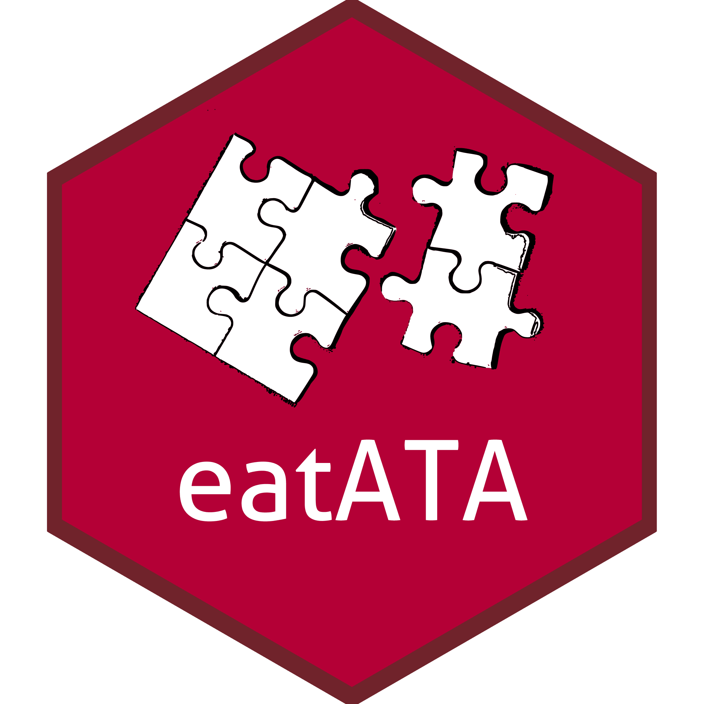

# Define objective function
obj <- c(1, 2, 3)
max <- TRUE
# Define constraints
mat <- matrix(c(1, 5, 1, 0, 0, 1, 18, 0, 1, 0, 1, 25, 0, 0, 1), nrow = 5)
dir <- c("<=", "<=", ">=", ">=", ">=")
rhs <- c(8, 120, 2, 2, 2)
# Define problem type (MIP)
types <- c("I", "I", "I")
# Call solver
Rglpk::Rglpk_solve_LP(obj, mat, dir, rhs,
types = types, max = max,
control = list("verbose" = TRUE, "canonicalize_status" = FALSE))eatATA - Automatisierte Blockbesetzung
Benjamin Becker
2024-11-05
Automatisierte Blockbesetzung
Blockbesetzung
Zuordnung von Items zu Blöcken aus einem Itempool unter Berücksichtigung von Testspezifikationen
Automatisiert
Nicht händisch, sondern unter Verwendung von Optimierungsalgorithmen
Vorstellungsrunde
30 Sekunden pro Person:
- Name
- Projekt
- Habt ihr schon mal selbst eine Blockbesetzung umgesetzt?
- Wenn ja, händisch oder mit eatATA?
Agenda
- Hintergrund: Wofür?
- Grundlagen: Mathematical Programming
- Theorie: Automated Test Assembly/Automatisierte Blockbesetzung
- Praxis: eatATA
Wofür?
Begrifflichkeiten
- Item
→ Eine Frage (kleinste Einheit) - Aufgabe/Unit
→ Set von Items mit gemeinsamem Stimulus - Block/Cluster
→ Zusammenstellung von Aufgaben, meist als fixer Kontext, ca. 20 Minuten - Testform/Testheft
→ Zusammenstellung von Blöcken, eine Person bearbeitet eine Testform
Parallele Testformen
Wieso?
Low-stakes Assessments
→ Breite inhaltliche Abdeckung
→ Messgenauigkeit auf GruppenebeneHigh-stakes Assessments
→ Abschreiben/Betrugsversuche verhindern
→ Weitergabe Testinhalte verhindernPilotierungen
→ Testung großer Itemzahlen
Block vs. Testform
Anforderungen Blockbesetzung
- Parallelität (inhaltlich, Formate, …)
Anforderungen Testformen
- Parallelität
- Linking
Parallele Blöcke
Hinsichtlich?
- Inhaltliche Bereiche
- Aufgabenformate
- Schwierigkeit/Testinformation
- Zeitaufwand/Speededness
- …
zusätzlich
- Itemunverträglichkeiten
Blockbesetzung
Häufig händisch (via Excel), aber:
- viele Items
- viele Constraints
→ z.B. viele Unverträglichkeiten - hoher Aufwand/kognitiver Load!
Mathematical Programming
Definition
Synonyme
- Mathematical Optimization/Mathematical Programming
Relevante Subklasse
- Mixed Integer (Linear) Programming (MIP/MILP)
Grundidee:
Maximierungs- oder Minimierungsproblem, wobei Lösungsraum durch (Ung-)Gleichungen eingeschränkt werden kann
Zentrale Konzepte
Branch and Bound Algorithmen
- Grundidee: Probieren aller möglichen Lösungen (“Brute Forcing”)
- Effiziente Reduktion des Lösungsraumes
- Kombinieren von Constraints
Zentrale Konzepte
- Decision Variables
- Constraints
- Objective Function
Beispiel: Variiertes Rucksackproblem
- Anstellungsoptionen StuMis, Docs, Postdocs
- Maximal 8 Büroplätze
- Maximale Kosten 120$: StuMis (5$), Docs (18$), Postdocs (25$)
- Es braucht von jeder Statusgruppe mindestens 2 Personen
- Publikationen: StuMis (1), Docs (2), Postdocs (3)
- Anzahl der Publikationen maximieren
Frage: Welche Kombination aus Personen soll eingestellt werden?
Beispiel: Variiertes Rucksackproblem
Decision Variables:
- Anstellungsoptionen StuMis, Docs, Postdocs
Constraints:
- Maximal 8 Büroplätze \[ S + D + P \leq 8 \]
- Maximale Kosten 120$: StuMis (5$), Docs (18$), Postdocs (25$) \[ 5S + 18D + 25P \leq 120 \]
Beispiel: Variiertes Rucksackproblem
Decision Variables:
- Anstellungsoptionen StuMis, Docs, Postdocs
Constraints:
- Es braucht von jeder Statusgruppe mindestens 2 Personen \[ S \geq 2 \] \[ D \geq 2 \] \[ P \geq 2 \]
Beispiel: Variiertes Rucksackproblem
Decision Variables:
- Anstellungsoptionen StuMis, Docs, Postdocs
Objective Function:
- Publikationen: StuMis (1), Docs (2), Postdocs (3)
- Anzahl der Publikationen maximieren \[ Maximiere \quad 1S + 2D + 3P \]
Solver
Open Source
- GLPK
- lpSolve
- Symphony
- …
Kommerziell
- Gurobi
- CPLEX
- …
Übung
- Versucht das vorgestellte Beispiel händisch zu lösen!
Lösung mithilfe von Rglpk
Lösung mithilfe von Rglpk
GLPK Simplex Optimizer 5.0
5 rows, 3 columns, 9 non-zeros
0: obj = -0.000000000e+00 inf = 6.000e+00 (3)
3: obj = 1.200000000e+01 inf = 0.000e+00 (0)
* 5: obj = 1.540000000e+01 inf = 0.000e+00 (0)
OPTIMAL LP SOLUTION FOUND
GLPK Integer Optimizer 5.0
5 rows, 3 columns, 9 non-zeros
3 integer variables, none of which are binary
Integer optimization begins...
Long-step dual simplex will be used
+ 5: mip = not found yet <= +inf (1; 0)
+ 7: >>>>> 1.500000000e+01 <= 1.500000000e+01 0.0% (1; 0)
+ 7: mip = 1.500000000e+01 <= tree is empty 0.0% (0; 1)
INTEGER OPTIMAL SOLUTION FOUND$optimum
[1] 15
$solution
[1] 3 3 2
$status
[1] 5
$solution_dual
[1] NA
$auxiliary
$auxiliary$primal
[1] 8 119 3 3 2
$auxiliary$dual
[1] NA
$sensitivity_report
[1] NAAutomatisierte Blockbesetzung
Automatisierte Blockbesetzung

Automatisierte Blockbesetzung
Verwendet Konzepte der Mathematical Optimization (Mixed Integer Programming) zur Blockbesetzung (Kuhn & Kiefer, 2015; van der Linden, 2005)
Zentrale Konzepte
- Decision Variables (0/1, Item x Block)
- Constraints (Testspezifikationen)
- Objective Function (wichtigste relative Testspezifikation)
Minimalbeispiel: Item Pool
- 30 Items
- Item Formate (MC, offen, Zuordnung)
- Durchschnittliche Antwortzeiten
- Schwierigkeitsparameter (1PL-Modell)
Minimalbeispiel: Item Pool
| item | format | time | difficulty |
|---|---|---|---|
| 1 | mc | 27.78586 | -1.8809028 |
| 2 | mc | 15.45258 | 0.8429586 |
| 3 | mc | 31.01590 | 1.1188154 |
| 4 | mc | 29.87421 | 0.7286774 |
| 5 | mc | 23.13401 | -0.4887099 |
Minimalbeispiel: Spezifikationen
Spezifikationen
- 1 Block
- Minimale durchschnittliche Blockzeit
- Exakt 10 Items im Block
- 4 MC-Items, 3 offene Items, 3 Zuordnungsitems
Minimalbeispiel: Decision Variables
Decision Variables
- Matrix mit
- Spalten = Anzahl Items (+ 1)
- Zeilen = Anzahl Blöcke
- 30 Items, 1 Block \[ i_{1, b1}, i_{2, b1}, i_{3, b1}, \ldots, i_{30, b1} \]
Minimalbeispiel: Objective Function
Objective Function
- ‘Relative Testspezifikation’
- so viel/wenig/nah wie möglich (an) …
- Wichtig: Exakt eine Testspezifikation muss hierfür ausgewählt werden
- Min/Max/Minimax/Maximin
- Minimale Blockzeit \[ minimiere \quad 27.79i_{1, b1} + 15.45i_{2, b1} + \ldots + 19.50i_{30, b1} \]
Minimalbeispiel: Constraints
Constraints
- Alle anderen Testspezifikationen
- Genau 10 Items pro Block \[ i_{1, b1} + i_{2, b1} + \ldots + i_{30, b1} = 10 \]
- 4 MC Items, 3 offene Items, 3 Zuordnungsitems \[ 1i_{1, b1} + 1i_{2, b1} + \ldots + 0i_{30, b1} = 4 \] \[ 0i_{1, b1} + 0i_{2, b1} + \ldots + 0i_{30, b1} = 3 \] \[ 0i_{1, b1} + 0i_{2, b1} + \ldots + 1i_{30, b1} = 3 \]
Übung
Notiert die Decision Variables, Objective Function und Constraints für folgendes ATA-Problem:
- 2 Blöcke
- beide Blöcke bzgl. Testzeit so nah wie möglich an 450 Sekunden
- jedes Item darf maximal nur in einem Block vorkommen
- pro Block müssen alle 3 Itemformate mindestens 3 mal verwendet werden
Lösung
- Decision Variables für 2 Blöcke und Item-Pool aus 30 Items
\[ i_{1, b1}, i_{2, b1}, i_{3, b1}, \ldots, i_{30, b1} \] \[ i_{1, b2}, i_{2, b2}, i_{3, b2}, \ldots, i_{30, b2} \]
Lösung
- beide Blöcke bzgl. Testzeit so nah wie möglich an 450 Sekunden
- Maximin-Ansatz
\[ 27.79i_{1, b1} + 15.45i_{2, b1} + \ldots + 19.50i_{30, b1} - y <= 450 \] \[ 27.79i_{1, b1} + 15.45i_{2, b1} + \ldots + 19.50i_{30, b1} + y >= 450 \] \[ 27.79i_{1, b2} + 15.45i_{2, b2} + \ldots + 19.50i_{30, b2} - y <= 450 \] \[ 27.79i_{1, b2} + 15.45i_{2, b2} + \ldots + 19.50i_{30, b2} + y >= 450 \] \[ minimiere \quad y \]
Lösung
- jedes Item darf maximal nur in einem Block vorkommen
\[ i_{1, b1} + i_{1, b2} <= 1 \] \[ i_{2, b1} + i_{2, b2} <= 1 \] \[ \ldots \]
Lösung
- jedes Itemformat sollte mindestens 3 Mal pro Block vorkommen
\[ 1i_{1, b1} + 1i_{2, b1} + \ldots + 0i_{30, b1} >= 3 \] \[ 1i_{1, b2} + 1i_{2, b2} + \ldots + 0i_{30, b2} >= 3 \] \[ \ldots \]
Umsetzung in eatATA
eatATA
Entwickelt basierend auf Feedback von:
- Pauline Kohrt (ehemals VERA 3 Math)
- Simone Dubiel (ehemals VERA 8 German)
- Karoline Sachse (BT/Methoden)
Paketautoren:
- Dries Debeer (Ghent University)
- Benjamin Becker (IQB)
eatATA: Resources I
Vignettes available on CRAN
eatATA: Resources II
or on pkgdown
eatATA: Resources III
eatATA Tutorial Paper (Becker et al., 2021)
Code: Objective Function
Minimiere durchschnittliche Blockzeit
Code: Constraint 1
Anzahl Items im Block
Code: Constraint 2
Itemformate
Code: Solver Call
Solver Call
GLPK Simplex Optimizer 5.0
5 rows, 31 columns, 91 non-zeros
0: obj = 0.000000000e+00 inf = 1.000e+01 (1)
14: obj = 2.758548505e+02 inf = 0.000e+00 (0)
* 15: obj = 2.758548505e+02 inf = 0.000e+00 (0)
OPTIMAL LP SOLUTION FOUND
GLPK Integer Optimizer 5.0
5 rows, 31 columns, 91 non-zeros
30 integer variables, all of which are binary
Integer optimization begins...
Long-step dual simplex will be used
+ 15: mip = not found yet >= -inf (1; 0)
+ 15: >>>>> 2.758548505e+02 >= 2.758548505e+02 0.0% (1; 0)
+ 15: mip = 2.758548505e+02 >= tree is empty 0.0% (0; 1)
INTEGER OPTIMAL SOLUTION FOUNDCode: Inspect Solution
Zusammengestellten Block inspizieren
$form_1
item format time difficulty
2 2 mc 15.45258 0.8429586
5 5 mc 23.13401 -0.4887099
6 6 mc 25.19305 0.4727387
10 10 mc 15.35510 1.3539724
12 12 open 35.94400 2.4992738
16 16 open 45.12778 -1.2862969
17 17 open 48.11908 -0.8612431
21 21 order 22.47400 -0.4314714
29 29 order 25.55363 0.2409175
30 30 order 19.50162 -0.5143411
Sum 148 <NA> 275.85485 1.8277985Code: Append Solution
Blockbesetzung zu Itempool hinzufügen
item_mini_out <- appendSolution(
solver_out,
items = items_mini,
idCol = "item"
)
item_mini_out[1:10, ] item format time difficulty form_1
1 1 mc 27.78586 -1.8809028 0
2 2 mc 15.45258 0.8429586 1
3 3 mc 31.01590 1.1188154 0
4 4 mc 29.87421 0.7286774 0
5 5 mc 23.13401 -0.4887099 1
6 6 mc 25.19305 0.4727387 1
7 7 mc 25.66340 -1.1805427 0
8 8 mc 30.21856 -0.3670765 0
9 9 mc 26.61642 -0.5687943 0
10 10 mc 15.35510 1.3539724 1Überblick Funktionalität
Itempool vorbereiten
calculateIIF()- Berechnung Item-InformationsfunktioncalculatExpectedRT()- Berechnung erwarteter AntwortzeitendummiesToFactor()- Transformation von Dummy-Variablen in FaktorencomputeTargetValues()- Berechnung von sinnvollen Zielwerten
Objective Function
maxObjective()- MaximierenminObjective()- MinimierenmaximinObjective()- Maximieren eines MinimumsminimaxObjective()- Minimieren eines MaximumscappedMaximinObjective()- Capped Maximin
Constraints
Itemverwendung
depletePoolConstraint()- Erschöpfung des ItempoolsitemUsageConstraint()- Itemnutzung
Anzahl Items pro Form
itemsPerFormConstraint()- Anzahl Items pro Form
Constraints
Kategoriale Constraints
itemCategoryConstraint()- Kategoriale ConstraintsitemCategoryDeviationConstraint()- Abweichung von ZielwertitemCategoryMaxConstraint()- MaximumitemCategoryMinConstraint()- MinimumitemCategoryRangeConstraint()- Maximum und Minimum
Constraints
Metrische Constraints
autoItemValuesMinMaxConstraint()- Automatische Min/Max-BerechnungitemValuesConstraint()- Metrische ConstraintsitemValuesDeviationConstraint()- Abweichung von ZielwertitemValuesMaxConstraint()- MaximumitemValuesMinConstraint()- MinimumitemValuesRangeConstraint()- Maximum und Minimum
Constraints
Metrische Constraints über Testformen
acrossFormsConstraint()- Über Testformen
Iteminklusionen und -exklusionen
itemExclusionConstraint()- ItemexklusionenitemInclusionConstraint()- Iteminklusionen
Vorbereitung von Iteminklusionen und -exklusionen
itemTuples()- Vorbereitung von Iteminklusionen und -exklusionenmatrixExclusionTuples()- Vorbereitung von ItemexklusionenstemInclusionTuples()- Vorbereitung von Iteminklusionen
Übung
Erstellt Blöcke mit folgenden Testspezifikationen mithilfe von eatATA (siehe auch letzte Übung):
- 2 Blöcke
- beide Blöcke Testzeit so nah wie möglich an 450 Sekunden (via
minimaxObjective()Funktion) - jedes Item darf maximal nur in einem Block vorkommen (via
itemUsageConstraint()Funktion) - pro Block müssen alle 3 Itemformate mindestens 3 mal verwendet werden (via
itemCategoryMinConstraint()Funktion)
Setzt für die Lösung des Problems dem Solver ein Zeitlimit von 10 Sekunden!
Lösung
Siehe R-Syntax
Praktische Tipps
- ATA ist ein Skill für sich
- Es gibt immer mehrere Wege zum Ziel
- Pragmatisches Vorgehen:
- Häufig muss die Lösung nicht perfekt sein
- Der Weg zum Ziel ist irrelevant
- Schrittweises Vorgehen (Spaccapanico Proietti et al., 2020)
- Problem schrittweise aufbauen oder
- Problem schrittweise vereinfachen
References
Becker, B., Debeer, D., Sachse, K. A., & Weirich, S. (2021). Automated test assembly in R: The eatATA package. Psych, 3(2), 96–112. https://doi.org/10.3390/psych3020010
Kuhn, J.-T., & Kiefer, T. (2015). Optimal test assembly in practice. Zeitschrift für Psychologie, 221(3), 190–200. https://doi.org/10.1027/2151-2604/a000146
Spaccapanico Proietti, G., Matteucci, M., & Mignani, S. (2020). Automated test assembly for large-scale standardized assessments: Practical issues and possible solutions. Psych, 2(4), 315–337. https://doi.org/10.3390/psych2040024
van der Linden, W. J. (2005). Linear models for optimal test assembly. Springer. https://doi.org/10.1007/0-387-29054-0
Danke für Eure Aufmerksamkeit!
Appendix
Item Inclusions
Gründe
- Gemeinsamer Stimulus (‘Aufgabe’)
- andere Gründe
Umsetzung
- Aufgaben und nicht Items als Assembling Unit (e.g., VERA 3 Math)
- explizite Item Inclusion (siehe eatATA Tutorial)
Item Exclusions
Gründe
- Item beinhaltet Info zu Lösung eines anderen Items
- Items inhaltlich zu ähnlich
- …
Umsetzung
- Explizite Item Exclusions
Code: Item Inclusions (Input)
Input: Spalte mit Gruppierung
Output: Inclusion Tuples
Code: Item Inclusions (Constraints)
Erstellung von Inclusion Constraints
Code: Item Exclusions (Input)
Input: Spalte mit Exclusion-Listung
Output: Exclusion Tuples
Code: Item Exclusions (Constraints)
Erstellung von Exclusion COnstraints

Automatisierte Blockbesetzung